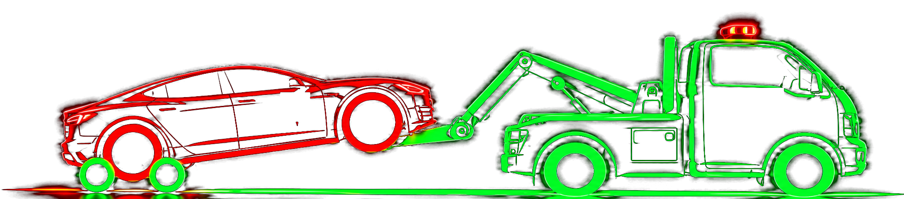
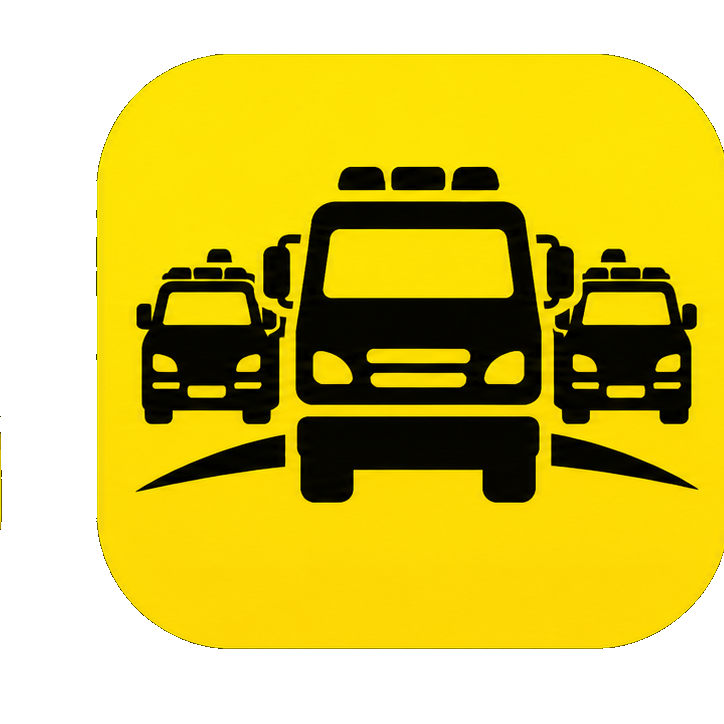
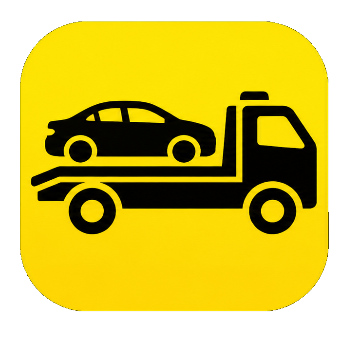
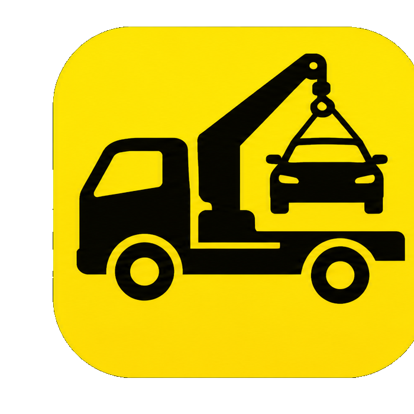

Asistencia en ruta · 24/7Grúas Sabino
Puerto Varas y toda la región

Nuestra Flota y Capacidad
Grúa con Cama
Traslado de vehículos urbanos e interurbanos, incluidos autos bajos, deportivos y vehículos bloqueados.

Grúa de Levante
Para vehículos eléctricos bloqueados y vehículos en espacios subterráneos.
7 Grúas de Apoyo: Si una unidad está ocupada, contamos con respaldo inmediato en la zona.
Servicios Principales
Cobertura y Zona
Local: Puerto Varas, Puerto Montt y alrededores.
Rutas y Pueblos: Llanada Grande, Río Puelo, Cochamó, Volcán Osorno y otros sectores.
Larga Distancia: Desde Puerto Varas a Valdivia, Chaitén, Chiloé, Santiago y otros destinos.